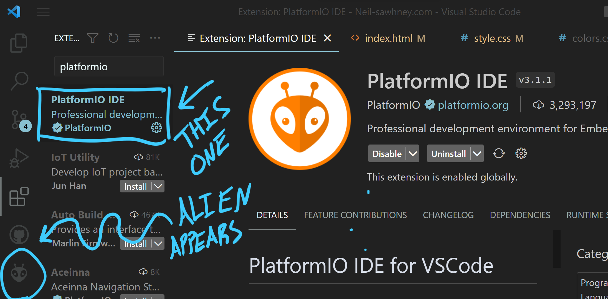

How to Program AVR Microcontroller's Using PlatformIO and VSCode
-Neil Sawhney
As an alternative to programming your avr microcontrollers in MPLAB or Atmel Studio, you can use VSCode with the PlatformIO extension.
Pros
-
PlatformIO is versatile and can be used for programming a vast variety of microcontrollers and development boards in almost any language and framework, as opposed to MPLAB which is only used for programming their microcontroller families.
-
If you're an avid programmer, there's a high chance you're already using and familiar with VSCode as opposed to MPLAB. Instead of learning many different ide's for each purpose, you can use VSCode. Some programming you can do in VSCode includes python, jupyter notebooks, c++, c, c#, matlab, javascript, php, the list goes on.
Cons
-
MPLAB provides official, dedicated support and seamless compatibility with Microchip's microcontrollers.
-
Built-in tools in MPLAB are tailored for Microchip's devices, offering better integration than PlatformIO and VSCode.
-
Atmel Studio, while still supported, is gradually being overtaken by MPLAB.
There are good motives for both methods, but personally I prefer the VSCode route. Unfortanately i've found this method to be somewhat tricky to get started without lots of research, despite being extremely simple. Hopefully this article solves that problem.
Some prerequisites/supplies to follow this guide:
VSCode installed + familiarity of the basics
Basic breadboarding ability
An AVR Microntroller
A Programmer for the Microcontroller (can be an arduino or esp8266)
Step 1: Install The PlatformIO Extension in VSCode
Step 2: Create a new project
Click the PlatformIO icon (the alien) in the bottom left corner of VSCode and click "PIO Home"